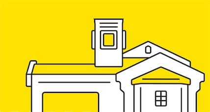
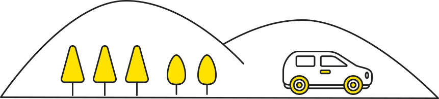

会社理念
- our pilicy -
 1993 年、アメリカ留学から戻った知人の土産話に触発され、「アメリカの MOTEL のような、誰もが気軽に泊まれる宿泊施設を、日本にも誕生させたい」と思い立ちました。
さっそく、その知人とふたり、アメリカ西海岸の MOTEL を泊まり歩いたのですが、最初はあまりにも素っ気ない雰囲気になじめず違和感を覚えました。ところが、「これがアメリカ人にとっての普段着の旅」であることに気づいてからは、日本人と異なる価値観や人生観を感じ、こうした宿を展開することによって日本人に欠けている自由で自立した旅や社会につなげていけるのではないかと考えるようになりました。この時の強い思いが、今も変わらない次のモットーです。
『シンプルで自由な、
旅と暮らしをサポートする』
- ・自由で自立した旅や社会を支えるインフラとしての宿泊施設の全国展開
- ・確実で自立した就労機会の創出と地域社会の健全な維持継続の基盤整備
その後、事業の構想に着手し、1994 年 7 月 1 日に会社を設立、翌 1995 年夏に 1 号店をオープンさせました。以来、四半世紀以上、さまざまな困難に直面しながら試行錯誤を重ねてきましたが、多くのリピーターに支えられ、全国各地に日本初の MOTEL チェーン「ファミリーロッジ旅籠屋」を展開することができました。
まだまだ発展途上で未熟な部分も多いのですが、支持されてきた背景には、守り続けてきた独自のこだわりがあり、それが「旅籠屋らしさ」として多くの人に受け入れられているように思います。
甲斐 真（創業者）
OUR POLICY「旅籠屋らしさ」とは
日本になかったモーテルをゼロから立上げ、その後試行錯誤しながら会社を30年率いてきた創業者が考えたポリシーが12項目残されています。これこそが「旅籠屋」ブランドのイメージや価値の源泉であり、私どもが目指し、守り、継続していく、大切な考え方です。
ジェンダーフリー、SDGs、自由な働き方など現在話題になるトピックスは、旅籠屋では創業当初から一貫して実践されてきました。これから時代ごとに「自由」の捉え方は変わってくるでしょう。しかし、私どもは理念、ポリシーを念頭に考え続けます。これまでどおりベンチャースピリッツをもって。
私たちが目指す
ホテルのかたち
-
01.個人の自由な旅を守り、
支え続けます「移動すること」は生物の根源的欲求です。これは人類にとっての貴重な財産であり、短期的な経済的合理性などの次元で安易に制限されるべきではありません。「旅」は「誰もが気兼ねなく、好きな時に、好きな場所に行ける自由」の象徴であり、宿泊業に携わる我々の最大の使命はその自由を守ることだと考えます。
-
02.自由を守るために、
多様性を尊重します自分との違いに寛容になりお互いを受け入れるからこそ、自由が保たれます。「自由を守る」とは「多様性を尊重する」ことにほかなりません。予断･偏見･先入観にとらわれない、老人や幼児・喫煙者・ペット連れ・障がい者を含めすべてのお客様を分け隔てなく自然に受け入れる、注意事項や禁止事項を出来るだけ少なくする。お客様を選ばない、誰に対してもフェアな態度で接する、出来るだけ制約を設けず、宿泊料金を可能な限り安価にし、気軽にお泊りいただけるようにします。
-
03.お客様と周辺に、
安全と安心を提供します災害時においてお泊りのお客様はもちろん周辺の方々の「緊急避難場所＝シェルター」として役割を果たすべきだと考え、被災者の方々を原則無料で受け入れてきました。雨風をしのぐスペースと寝具、最低限の食べ物と水があれば命をつないでいただくことができるからです。2011年の東日本大震災後は、多くの店舗にLPガスによる非常用発電機を設置し、数日間は自動で電気を供給できるようにしています。
-
04.お客様のプライバシーを、
徹底して守りますお客様のプライバシーを守ることは宿泊施設に課せられた大切な義務です。人にはそれぞれの事情があります。気兼ねなく旅行できなければ「自由な旅」とは言えません。
-
05.サービスしないことで、
自立した旅を提案します宿泊の目的、過ごし方、楽しみ方を限定しないこと、干渉しないことを大切にしています。温泉や豪華な食事付きの宿泊には「温泉旅館」があります。充実した娯楽施設付きの宿泊には「リゾートホテル」があります。宿の主人などとの会話を楽しむなら「ペンション」があります。いろいろなサービスを求める人にとって「ファミリーロッジ旅籠屋」は何にもない宿ですが、自立した旅を楽しむ方のためには「サービスしないことがサービス」であり、私たちの役割は旅の背景に徹することだと考えています。
-
06.快適にお泊りいただく
という基本を、大切に
します「移動すること」は生物の根源的欲求です。これは人類にとっての貴重な財産であり、短期的な経済的合理性などの次元で安易に制限されるべきではありません。「旅」は「誰もが気兼ねなく、好きな時に、好きな場所に行ける自由」の象徴であり、宿泊業に携わる我々の最大の使命はその自由を守ることだと考えます。
-
07.車社会のインフラ施設と
して、地域を支えますMOTELは車社会の重要なインフラ施設であり、地域を支えるためには常設の宿泊施設の存在が欠かせません。だからこそ、需要の大きな大都市周辺に偏ることなく全国津々浦々に出店することを心がけ、収益性が低くても撤退せず、営業を継続してきました。
素泊まりですから、食べる・遊ぶ・買うなどは周辺の施設を利用いただいています。お客様に地域の情報をお伝えできるよう観光協会のような役目も果たしています。 -
08.無駄を省き、環境負荷の
低減を図ります「物を大切にしよう。使い捨てはもったいないからやめよう」という価値観を大切にしてきました。歯ブラシ･ひげそり・スリッパなど使い捨てのアメニティ用品を省いた理由です。必ずしもコスト削減のためではありません。お客様からの要望も少なくありませんが、変えずにきました。
私たちが目指す
会社のかたち
-
09.取引先とは、誠実な仕事で信頼関係を築き、
共存共栄を図る「旅籠屋」は何の後ろ盾もなくゼロからスタートした会社です。先例のない事業を継続拡大して来れたのは お客様に対しても、取引先に対しても、信頼関係を大切にし、信用を裏切らなかったからです。これが最大の財産です。良い時も悪い時も経営状況を変わらず公表し、長期間にわたる責任を果たすため目先の利益を追わず、継続性を重視した堅実経営を続けてきました。
-
10.信頼関係をベースに、
人を大切にする会社であり続けます創業以来掲げている「シンプルで自由な、旅と暮らしをサポートする」というモットーにある「暮らし」とは店舗で働いている人の生活を意味しています。その背景にはアメリカの MOTEL で出会った活き活きと働く人たちの暮らしぶりに感銘を受けたことがあります。とかく日本では、一面的な物差しで人間が評価され、中高年者が働き甲斐のある職場に恵まれにくいという現実があります。経歴や形式にとらわれず人間性本位で社員を採用するという求人方針を掲げ、人生のパートナー2 名に店舗運営全般を委ね、信頼関係をもとにマイペースで主体的に働ける就労の場と形態を実現しようとしていることは、「旅籠屋」がもっとも大切にしていることであり、誇りとしている点でもあります。
-
11.形式的な法令遵守ではなく、
真に公益性の高い会社を目指します「旅籠屋」は日本になかった業態の宿泊施設や働き方を具体化してきましたから、時代遅れの規制に異を唱え、改正を訴え続けてきました。法令以外にも、事なかれ主義や先例主義、誤解中傷などの障害と闘ってきました。形式だけ合わせたり、コネを使って要領よく立ち回る会社も多いようですが、これでは不合理な規制や常識を追認してしまうことになるため、「旅籠屋」は正面から粘り強く議論し、逃げたりごまかしたりせずに正しいと考える主張を続けてきました。手間がかかり批判されることもありますが、こうした姿勢を貫くことこそベンチャー企業の存在意義だと信じています。
-
12.時流に流されず、
シンプルで変わらぬ永続性を求めます特定の需要に迎合したり、話題性にとらわれてメディアやネットへの露出を追いかけたり、時流の波に無自覚に乗ったりすることをあえて避けてきました。宿泊業は人類最古の生業のひとつであり、未来永劫続いていくに違いないリアルなビジネスだと信じています。ですから、世の中の流れやムードに惑わされず、長期的な視点に立って永続的な価値を見失わず、ぶれずに理念の実現を追求していきます。
それでは、
旅籠屋で自由な旅を！